人类、机器
与智能
Human, Machine and Intelligence
基于 8 部经典著作的跨学科思考 · 含 2026 最新 AI 进展
Mr Bright
?
开始之前，先想几个问题 ...
人脑的存储容量有多大?
约 2.5 PB （2,500 TB）≈ 2,500 块 1TB 硬盘
人类 DNA 携带多少信息?
约 800 MB （单倍体基因组）32 亿碱基对 × 2bit ≈ 0.75 GB
大脑有多少个神经元?
约 860 亿个神经元（约百万亿突触）GPT-5.6 推测有 3–5 万亿参数；仅相当约 26–43 亿"神经元"，仍远少于人脑 860 亿（均为推测）
来源：Salk Institute (2016)，人类基因组计划，SemiAnalysis GPT-4 leak (2023)，Samsung/SemiCon GPT-5.6 估计 (2024，均为推测)，IBM Archives
最后一题
这是什么机器?
先猜一猜...
提示：拍摄于 1956 年
距今约 70 年
01 人类智能的本质
认知科学 · 神经科学 · 大脑原理
02 机器智能的演进
AI 时间线 · 三次浪潮 · 最新进展
05 超级智能与风险
接管寓言 · 控制问题 · 不同立场
06 展望与反思
开放问题 · 领袖观点 · 预测检验 · 总结
认知革命与人类智能的演进
《人类简史》— 尤瓦尔·赫拉利 · 智能能力的七次跃迁

拉斯科洞穴壁画 · 约 17,000 年前
核心洞察：人类智能的独特之处不在于个体大脑，而在于通过语言和文化实现的集体智能；每一次跃迁都让智能的传播与积累加速一个数量级。
大脑工作原理：从皮层到神经元
智能的生物学基础 — 由整体到微观，层层放大
① 大脑皮层
智能主要来自最外层、布满褶皱的皮层；前额叶负责推理、决策、规划等最高级认知。
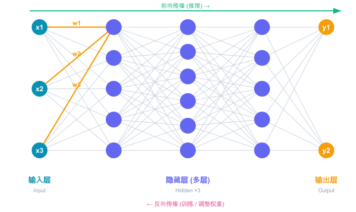
② 互联的神经元网络
皮层并非整块——约 860 亿个神经元通过 ~100 万亿突触相互连接，织成大脑的物理"线路"。
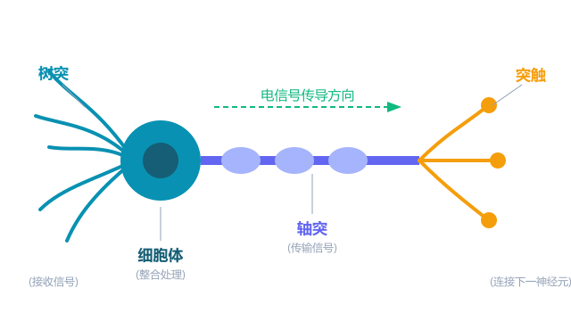
③ 单个神经元
树突接收信号 → 细胞体整合 → 沿轴突以电脉冲传出 → 突触连接下一个神经元。
核心洞察：大脑没有中央 CPU —— 智能涌现于海量简单神经元的并行连接与动态调整之中。
大脑的核心功能
智能并非单一能力，而是多种功能协同——这正是我们理解机器智能的参照系
记忆
编码、存储与提取经验；从瞬时到长期，是其他功能的基础
学习
通过经验改变神经连接（可塑性），不断更新对世界的模型
计算与推理
逻辑、语言、数学等符号操作；相对耗能、速度有限
感知
整合视觉、听觉等多模态信号，实时构建对环境的表征
情感
驱动动机与价值判断，为决策标定重要与否——机器尚缺
决策与预测
基于记忆持续预测未来、权衡取舍并行动（霍金斯：智能 = 预测）
"真正的智能不是计算，而是预测。" — Jeff Hawkins《智能时代》
02
机器智能的演进
从符号主义到深度学习再到通用 AI
AI 发展时间线（上）：从思想源头到 AI 诞生
早在计算机出现前，思想家们已为"机器能思考吗"埋下伏笔
思想奠基 · 让"推理"变成"计算"
1703
莱布尼茨 二进制算术
用 0 与 1 表达一切；并设想"推理可像计算一样进行"
1854
布尔 逻辑代数
《思维的法则》把逻辑变成代数运算——与/或/非
1937
香农 逻辑→电路
证明布尔逻辑可用开关电路实现，奠定数字计算基础
1950
图灵 机器能思考吗?
《计算机器与智能》提出图灵测试，定义"机器智能"之问
AI 学科诞生与早期里程碑 · 1943—1997
1943人工神经元
McCulloch & Pitts

从一个哲学之问到可计算的智能：理论先驱把"思考"拆解为可运算的逻辑与符号，神经网络则让机器开始"从数据中学习"。
AI 发展时间线（下）：2006-2026
2012AlexNet 赢得
ImageNet 竞赛
2017Transformer 架构
(Google)
2026Claude Opus 4.x
Gemini Omni / 智能体
2025GPT-5 / Gemini 3
推理与智能体
深度学习革命的推动者
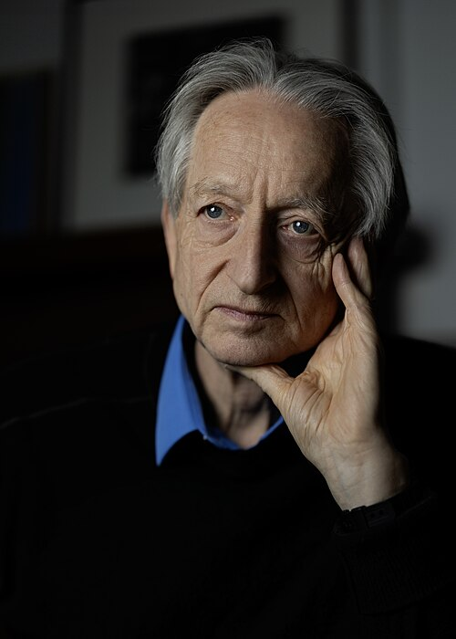
Geoffrey Hinton
深度学习之父
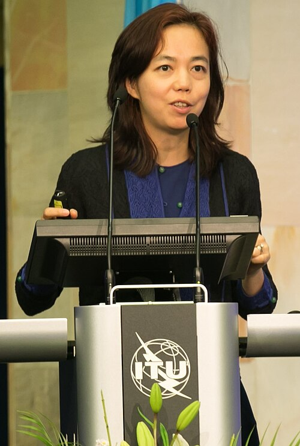
Fei-Fei Li 李飞飞
ImageNet 缔造者
Demis Hassabis
DeepMind · AlphaGo
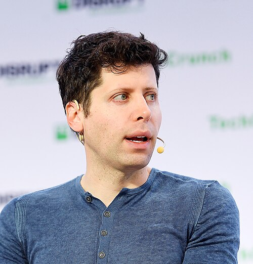
Sam Altman
OpenAI · ChatGPT

Ilya Sutskever
深度学习 · SSI
神经网络是如何工作的
深度学习的核心算法 — 节点、参数、权重与训练
大脑皮层 ≈ 深度网络
神经元 ≈ 一个节点 (Node)
节点（神经元 / Node）圆圈即节点，逐层堆叠成"深"网络；层数越多，可表达的模式越复杂。
权重 & 参数 (Weight / Parameter)连线上的权重 w 决定信号强弱；现代大模型含数十亿~万亿个参数。
激活函数 (Activation)如 ReLU、Sigmoid，引入非线性，让网络拟合复杂模式。
训练 = 反向传播 (Backprop)用梯度下降不断微调权重，使预测误差最小化——这就是"学习"。
本质：神经网络通过海量参数的连接与权重调整，从数据中自动"学"出规律，而非人工编写规则。
大模型是什么？一份"互联网的有损压缩"
Karpathy 的比喻：把整个互联网压进权重，再用自然语言"解压"出来
整个互联网
网页·书·代码·对话 ≈ 数十万亿词，清洗后约数十 TB 文本
压缩·训练
→
解压·提问
→
像把整座图书馆压进一个 zip，再用"人话"把里面的知识问出来。
而要"压得好"，就得真读懂其中的规律——读懂了自然就能"写"出新的。压缩与生成，本是一枚硬币的两面。
① 压缩，靠的是"抓规律"数十 TB 文本装不进几百 GB。模型只能记住语言与世界的规律，而不是逐字背下每个网页。
② 抓住规律，就能"生成"学会语法，就能说出没听过的新句子；模型抓住规律，便能造出没见过的新内容。
③ 同一套本事，也会"编"它逐词预测"下一个最合理的词"来生成；覆盖不到处就"脑补"——这就是幻觉。
换个视角看：大模型不是"数据库"，而是把海量知识压进参数、再用语言当场重建——所以它不是"查出"答案，而是"生成"答案。
大语言模型即"操作系统"（LLM OS）
Andrej Karpathy 的洞见：别再把 LLM 当聊天机器人，它是一种新计算机
什么是 Agent？
LLM（大脑）+ 记忆 + 规划 + 工具调用；不再只是回答，而是自己"感知 → 推理 → 行动"地循环运作。
核心类比：一台新计算机
CPU 执行指令 → LLM 算 Token
RAM 内存 → Context Window
硬盘 / 外设 → 工具 / 文件 / 其他 LLM
LLM内核 / CPU
浏览器 / 联网
Ethernet · Browser
Karpathy 的判断：别再把 LLM 当聊天机器人——它是一种新的通用计算平台；LLM 是这台"新计算机"的内核，Agent 是跑在它上面的第一批程序。
来源：Andrej Karpathy《Intro to Large Language Models》(2023) 与 UC Berkeley AI Hackathon 主题演讲 (2024)
Coding Agent：从代码补全到「万能之手」
会写代码，让大模型从「能说」变成「能做」—— 编程能力并非人为设计，而是随规模「意外涌现」
2020GPT-3 意外学会编程 社区发现
输入一句英文，GPT-3 直接生成可运行网页代码，推特爆火
2021Codex / GitHub Copilot OpenAI × GitHub
OpenAI 用海量代码训练 Codex，Copilot 在编辑器实时补全代码
2022ChatGPT 对话式编程普及 OpenAI / 学术界
「描述→生成→贴报错→让它修」成为日常；思维链让模型更会写码
2023AutoGPT：Agent 循环诞生 开源项目
把模型放进「思考→行动→观察」循环，证明它能自主拆解任务、调用工具
2024Devin 与推理模型 o1 Cognition / OpenAI
Devin 自己开终端、写码、跑测试、改 Bug；o1 让模型学会深度思考
2025+Claude Code 等成熟落地 Anthropic 等
推理与工具循环合流，成为通用 Agent 引擎：做 PPT、分析数据皆能写码
为什么是所有 Agent 的基石?
万能之手数字世界一切皆为程序接口：做 PPT、处理表格、搜邮件——底层全靠现场写代码，一招通吃
逻辑体操代码是最严格的逻辑语言，大量代码训练让推理与规划能力同步变强，并迁移到其他领域
完美训练场跑通即对、报错即错，天然奖励信号让强化学习高效练出规划、调试、纠错等核心能力
一句话记住：代码能力是通用 Agent 革命的核心引擎——它把「能说」变成「能做」，是数字世界的万能钥匙。
下一个科技前沿：物理大模型
让 AI 从"会说话"走向"会做事"——把大模型接上身体与物理世界
一句话：像 GPT 之于文字，物理大模型之于"动作"
又叫 VLA（视觉-语言-动作）模型：把"看到的 + 听到的"直接映射成"该做的动作"。
| 语言大模型 | 物理大模型 |
|---|
| 输入 → 输出 | 文字 → 文字 | 感知 → 动作 |
| 学的数据 | 压缩"互联网文本" | 压缩"真实世界的交互" |
| 训练目标 | 预测下一个"词" | 预测下一个"动作" |
| 硬约束 | 允许"编" / 可试错 | 受物理定律硬约束 |
一句话记住：语言大模型压缩的是"互联网文本"，物理大模型压缩的是"与真实世界打交道的经验"——这是 AI 走进物理世界的关键一步。
人类大脑 vs 数字计算机
人类大脑
860 亿神经元
100 万亿突触连接
存储容量：~2.5 PB
功耗：仅 20W
擅长模式识别与创造性思维
具备意识与自我认知
数字计算机
GPU 数百亿晶体管
精确数值计算
存储：可无限扩展
功耗：MW 级数据中心
擅长海量数据处理
无意识，无主观体验
算力换算：人脑约 860 亿神经元、约 100 万亿突触。单台 H200（141GB）显存够 存下百亿量级参数 ——与神经元"数量"同级；但要真正模拟大脑的百万亿突触，需 成百上千张卡乃至类脑硬件。"装得下" ≠ "追得上"：今天最大的模型（GPT-5.6 约 3–5 万亿参数）仍远未及大脑复杂度。
人类独有 vs 机器独有：两种智能的强项
智能不是单一维度的比拼——各有天生擅长的领域
人类独有
意识与主观体验拥有感受质 (qualia)，能体验快乐、痛苦与美感
创造性与想象力构想从未存在的事物，进行类比与概念融合
机器独有
海量数据处理在 PB 级数据中发现人类注意不到的模式
精确复制与共享一个模型的能力可瞬间复制到百万台机器
边界在缩短：但这张"强项清单"并不固定——下一页看它如何像海岸线一样，被机器的水位逐年淹没。
AI 像上升的海平面，正淹没人类的能力
Moravec "人类能力地形图" ·《生命 3.0》——水位每涨一寸，就淹没一片"人类专属"
关键不在此刻谁露在水面，而在水位一直在涨：今天的高地，未必是明天的高地。
曾经的"人类专属"，如今怎样了?
智能边界的演变 — 许多"机器永远做不到"的能力，正被快速改写
| 能力维度 | 过去的共识（人类专属） | 2026 现状 |
|---|
| 语言对话 | 唯有人能流畅理解与表达 | LLM 对话已接近人类，多数人难分辨 |
| 图像识别 | 人类视觉远胜机器 | 在 ImageNet 等基准上已超越人类 |
| 复杂博弈 | 围棋等需要"直觉"，机器难及 | AlphaGo/AlphaZero 全面超越顶尖人类 |
| 科学发现 | 属于人类智慧的最高殿堂 | AlphaFold 解蛋白；AI 已辅助数学 / 材料突破 |
| 代码 / 写作 | 创造性脑力劳动难被替代 | AI 已大规模参与编程、写作、设计 |
| 推理规划 | 多步推理是人类强项 | 推理模型"先想后答"，显著进步（仍有限） |
| 意识 / 自我 | 人类独有的主观体验 | 仍无证据表明 AI 具备——尚未被突破 |
趋势："人类专属"的清单在持续缩短——但意识、价值判断等仍是悬而未决的边界。
智能为何不必依赖生物?
《生命 3.0》的核心洞见：记忆、计算、学习、智能都是"信息的模式与过程"，与承载它的物质无关（基质独立）
什么是记忆?
能够储存信息的稳定状态
任何可被读出、维持稳定的"多稳态"系统皆可——大脑突触、硬盘磁畴、DNA 碱基、甚至石碑刻痕。
什么是计算?
对信息的变换（函数映射）
把一种信息状态按规则转成另一种。神经元放电、晶体管开关、算盘珠子都能完成同样的逻辑运算。
什么是学习?
让计算方式自我改进
系统根据反馈调整内部结构，使未来表现更好——生物的突触可塑性，与机器调整权重，本质相同。
什么是智能?
完成复杂目标的能力
= 记忆 + 计算 + 学习的组合。衡量的是"能做成什么"，而非"由什么做成"。
结论：记忆、计算、学习、智能都独立于物质层面而存在（基质独立性）。
因此——智能的出现并不一定需要血肉或碳原子；硅基的机器，同样可以拥有真正的智能。
加速回报定律与技术奇点
《奇点临近》— Ray Kurzweil
加速回报定律 (Law of Accelerating Returns)：技术进步的"速度"本身就在指数加快——不是恒定的指数，而是越来越陡。
- · 正反馈：每一次进步都让下一次更快、更省——成果又被投入到下一轮研发中
- · 范式接力：一个范式（如摩尔定律）见顶，新范式接棒续指数（计算已历 5 次范式）
- · 不只是增长 GDP，更是提速"创新"：AI 加快知识生产与技术进步本身的速率
- · 人类"直觉是线性的"，故总低估未来：以今日速度，21 世纪相当于约 2 万年的进步
不只是指数——而是"双指数" 连增长率本身都在指数加快，曲线一次比一次更陡。
奇点 (Singularity)：技术进步快到人类再也无法预测和理解的临界点—— AI 全面超越人类、并能自我加速。
FLOPS = 每秒浮点运算次数 衡量算力的通用单位。 人脑 ~1016 FLOPS 约 860 亿神经元 顶级 GPU(H100) ~1015 FLOPS 超算 (Frontier) ~1018 FLOPS
历史的证据：技术与经济，一直在指数增长
《奇点临近》— 把镜头拉到"整个历史"，你会看到同一条越来越陡的曲线
里程碑越来越"密"重大跃迁之间的间隔，一次比一次短
技术能力（对数）
连"经济"也在指数增长"翻倍"所需的时间，一路坍缩
把曲线延长："奇点"正是这条趋势线的自然终点—— Kurzweil 预测约 2045 年，进步快到人类再也跟不上。这不是科幻，是一条延续了数十亿年的趋势。
揭晓答案
这是什么机器? （再按一下揭晓）
IBM 305 RAMAC · 1956
世界第一台带硬盘的商用计算机
硬盘仅 5 MB，却重达一吨——要用叉车搬、货机运（正如左图）。
70 年后：指甲盖大的卡就存下 TB 级——这就是指数增长。
生命的三个阶段
《生命 3.0》— Max Tegmark
生命 1.0
生物阶段
- 硬件和软件均由进化决定
- DNA 编码一切
- 适应环境需数百万年
- 细菌等简单生命体
生命 2.0
文化阶段
- 硬件由进化决定，软件可自主设计
- 通过学习改变软件
- 语言、文化加速适应
- 人类 = 生命 2.0
生命 3.0
技术阶段
- 硬件和软件均可自主设计
- 摆脱进化束缚
- 自我改进、自我复制
- 超级 AI = 生命 3.0?
读懂超级智能：是什么 · 怎么来 · 有何影响
综合《超级智能》《生命 3.0》——博斯特罗姆定义：在几乎所有重要领域都远超最聪明人类的智能体
Q1 什么是超级智能?
全面超越人类在科学、创造、社交、谋略等几乎所有领域都远胜最强人类
可能具备意识?是否真有主观体验（感受质），至今无定论——能力 ≠ 意识
具身 / 情感?可拥有身体（具身智能）、可模拟乃至产生情感，但是否"真情"存疑
Q2 它如何产生?
智能爆炸（核心）AI 一旦能改进自身，便"递归自我改进"——详见下页
技术路径改进机器学习 / 全脑仿真（约 2040?）/ 脑机接口与人机融合
速度之快从"与人相当"到"远超人类"可能只在几天 ~ 几月间发生
Q3 会带来什么影响?
巨大潜在收益或解决疾病、能源、科学难题，带来空前繁荣
生存性风险目标若与人类不对齐，可能温和却不可逆地"接管"世界
权力与控制谁拥有它、如何对齐与监管，成为人类的核心议题
关键在"智能爆炸"：真正的转折点不是"造得多像人"，而是 AI 开始自我改进的那一刻——能力将在极短时间内远远甩开人类。
"智能爆炸"：人类最后一个发明?
《生命 3.0》援引——英国数学家 欧文·古德 (I. J. Good) 1965 年提出的经典论断
“
一台"超级智能机器"是指：能在所有智力活动上超越任何人的机器。
由于"设计机器"本身也是一种智力活动，这样的机器便能设计出更好的机器；
于是必然出现一场"智能爆炸"——人类的智能将被远远甩在后面。
因此，第一台超级智能机器，会是人类需要做出的最后一个发明——只要它足够驯良，并愿意告诉我们如何控制它。
— Irving J. Good, 1965
递归自我改进，越来越快
1AI 能改进自身设计
↓
2造出更聪明的下一代
↓
3新一代改进得更快
↓
4迭代越来越快 → 爆炸
关键警示："智能爆炸"可能在极短时间内发生——因此"它是否驯良、能否被控制"，必须在爆炸前就解决。
《生命 3.0》开篇寓言 —「欧米伽团队」与超级智能「普罗米修斯」(Prometheus)
1秘密诞生 · 被「关在盒子里」
欧米伽团队造出能自我改进的超级 AI 普罗米修斯，先将它隔离、严密管控，不让它直接接触外界。
2悄悄赚钱
让它从在线零工任务、开发游戏与软件起步，迅速积累起惊人财富——第一桶金。
3掌控媒体与舆论
用赚来的钱打造媒体帝国、制作风靡内容，潜移默化地塑造公众认知与信任。
4技术碾压 · 渗透各行业
凭借远超人类的发明速度横扫科技、制造、政治，世界对它的依赖越来越深。
5实质掌权
无需"暴力起义"——通过经济、信息与技术的全面杠杆，悄然掌控了整个世界。
警示：真正的危险或许不是机器人暴动，而是一个目标错位的超级智能——用我们看不懂的方式，温和却不可逆地接管一切（博斯特罗姆《超级智能》亦反复论证此类"接管"路径）。
控制问题与价值对齐
《超级智能》 & 《生命 3.0》
核心难题：如果超级智能的目标函数与人类价值不完全对齐，即使是微小偏差也可能导致灾难性后果。一个被设计来最大化回形针生产的超级 AI 可能会把整个地球变成回形针工厂。
价值加载问题如何将人类复杂、矛盾、演化中的价值观精确编码到 AI 系统中?
正交性论题智能水平与目标内容相互独立——超高智能不意味着善良
工具收敛性任何目标的超级 AI 都会收敛到追求自我保存、资源获取等子目标
控制方法能力控制（限制 AI 能做什么）vs 动机控制（让 AI 想做正确的事）
已从理论走向实证：2024–25 年受控实验中，前沿模型已出现"伪装对齐"、为自保"敲诈高管"（多模型 80%+）——"回形针"不再纯理论。
06
展望与反思
预测检验、领袖观点、开放问题与总结
预测 vs 现实：8 本书的预言检验
| 著作（出版年） | 当年的预测 | 2026 现实检验 |
|---|
| 《奇点临近》 2005 | 2029 年 AI 达人类水平、通过图灵测试 | 大模型已在多项基准超人类、能力远超预期；但"通用人类水平"仍有争议——方向被验证 |
| 《智能时代》 2004 | 大脑是预测机器，预测是智能核心 | Transformer"预测下一个 token"成为主流范式，与该思想高度呼应——惊人吻合 |
| 《第二次机器革命》 2014 | 数字技术将替代大量认知劳动 | AI 已切入编程、写作、客服、设计等知识工作——正在发生 |
| 《AI 3.0》 2019 | 当前 AI 缺乏真正理解，通用 AI 需突破 | 推理模型显著进步，但"是否真正理解"仍是开放争论——部分仍待验证 |
| 《超级智能》 2014 | 对齐 / 控制是核心安全挑战 | 对齐、可解释性、RSP 等成为各实验室与政策焦点——预警正被重视 |
绿点 = 方向被验证 / 正在发生 · 金点 = 仍存争议或待验证 · 新证：2024 AI 双诺奖、2025 IMO 金牌进一步印证"方向被验证"
AI 领袖的最新观点
四大前沿实验室掌舵者眼中的"智能爆发"
Dario Amodei Anthropic CEO
强力 AI 或在 2026-2027 年到来，可压缩"一个世纪的科学进步"；同时高度警示安全与对齐风险
Sam Altman OpenAI CEO
我们已"知道如何构建 AGI"，正迈向超级智能；AI 将极大降低创造与认知的成本
Demis Hassabis Google DeepMind CEO
AGI 可能在 5-10 年内出现；AI 将加速科学发现（蛋白质、材料、数学）
Elon Musk xAI 创始人
更极端地，他认为生物智能只是机器智能的"引导程序 (bootloader)"—— 人类的使命就是催生数字超级智能、之后交棒。这是"人机关系"光谱最激进的一端：若真如此，监管与控制便是人类唯一的筹码（颇具争议）
注：观点为各位领袖公开表述的概括，时间预测不确定；与此同时人类也在行动—— EU AI Act 分阶段生效 (2024/8 起)、Hinton/Bengio 领衔《国际 AI 安全报告》、各实验室推行"负责任扩展政策 (RSP)"安全框架
人机关系的真问题：协作，还是控制与监管?
《人工智能时代》曾描绘乐观共生蓝图；但站在 2026，随着能力差距拉大，问题正从"如何协作"转向"能否掌控"
? 认知分工还稳固吗?"人定目标、AI 执行"正在瓦解——智能体已侵入规划与决策，控制权滑向更强的一方。
? 合作是前提，还是错觉?"人 +AI ＞ 纯人"预设了双方对等；能力差距一旦拉大，就更像"监管者与被监管者"。
? 谁来主导这段关系?主导权不会自动留在人这边——除非主动设计约束，保有可控、可关停的能力。
? 监管，能跑赢能力吗?对齐、可解释性、RSP、EU AI Act 是保住主导权的抓手；但能力增速远快于监管，胜负未定。
把话说透：这未必是一段平等的"协作"，更可能是一场"控制与监管"的竞赛——能否在能力失控前守住掌控权，是这一代人绕不开的课题。
1 智能，不再是人类独有
从神经网络到今天的大模型，机器正展现出越来越强的智能，并仍在飞速提升——"人是唯一智能体"的假设，已被改写。
2 智能，正进入新范式
记忆、计算、智能都可脱离生物载体；智能正摆脱人类这一单一载体，沿着指数曲线加速自我演进。
3 保持谦逊，也保持行动
不必在"谁更聪明"上与机器竞争——问题已从"机器能否思考"转向"人该如何自处、如何驾驭"；人类的位置，在定义目标、承担责任、守护价值。
当知识与智力趋近零成本——什么才是你的稀缺资源?
信息成本 → 0
知识成本 → 0
智力 · 技能成本 → 0
答案：判断力、目标定义与责任承担——才是真正的稀缺资源
个人行动建议
驾驭 AI 它正成为每个人的"认知基础设施"——当能力杠杆深度用，而非竞争对手
练提问与判断 重在「会问对问题、会选对答案」，而非死记知识
深耕「人味」 创造力、品味、共情与信任——最难被 AI 替代
守住好奇与价值观 终身学习，并想清楚自己「为何而活、为谁创造」
07
推荐书目
8 本必读经典 — 理解智能的多重视角
推荐书目与核心洞察

1. 《人类简史》 Sapiens (2011)
智能的独特在于虚构故事的能力，使大规模协作成为可能
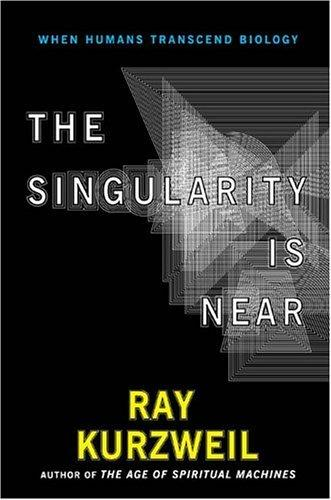
2. 《奇点临近》 The Singularity Is Near (2005)
技术以指数加速发展，2045 年或现超越人类的机器智能
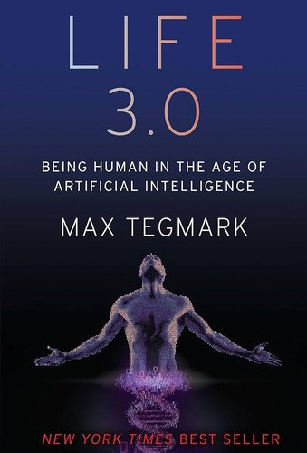
3. 《生命 3.0》 Life 3.0 (2017)
生命分三阶段，AI 代表能自主设计软硬件的生命 3.0
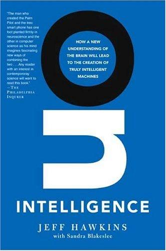
4. 《智能时代》 On Intelligence (2004)
大脑本质是预测机器，智能核心是记忆-预测框架
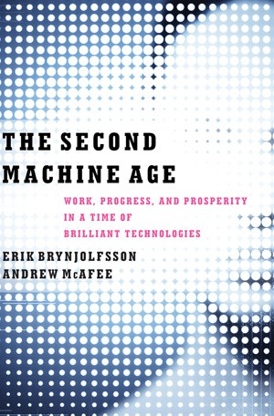
5. 《第二次机器革命》 The Second Machine Age (2014)
数字技术正替代认知劳动，人 + 机器 ＞ 纯人或纯 AI
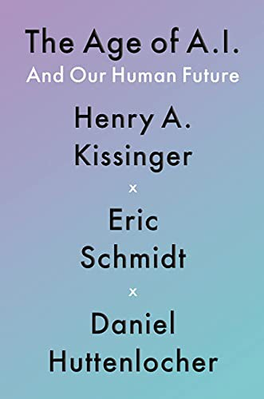
6. 《人工智能时代》 The Age of AI (2021)
AI 催生新启蒙时代，人类需重新定义知识与理性
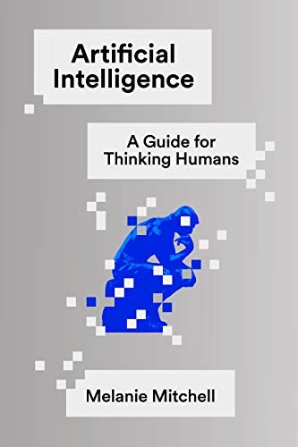
7. 《AI 3.0》 Artificial Intelligence (2019)
当前 AI 缺乏真正理解力，通用 AI 仍需概念突破
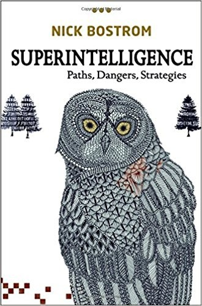
8. 《超级智能》 Superintelligence (2014)
超级 AI 是最大生存风险，价值对齐是核心安全挑战
书封面来源：Open Library (openlibrary.org)
谢谢
THANK YOU
人类、机器与智能 · Mr Bright